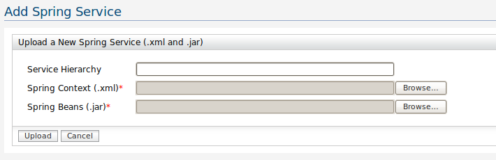

The WSO2 Web service Application Server (WSAS) provides a tool to simply expose a Spring bean as a Web service. All you have to do is provide a Spring context .xml file and a .jar file that contains the bean classes specified in the Spring context .xml file.
The following is a simple example of a Spring context .xml.
Specify a particular bean with an ID,and a class name which can be found in the .jar file.
<?xml version="1.0" encoding="UTF-8"?>
<!DOCTYPE beans PUBLIC "-//SPRING//DTD BEAN//EN" "http://www.springframework.org/dtd/spring-beans.dtd">
<beans><bean id="SimpleEchoBean" class="org.wso2.test.EchoBean"></bean>
</beans>
The Echo Bean for this example is given below. It can contain any type of service implementation.
package org.wso2.test;
/*** Example EchoBean***/
public class EchoBean {
public String echoString(String input) {
return input;
}
public int echoInt(int input) {
return input;
}
}
The Add Spring Service feature is used to upload the spring context.xml file and the .jar file with the bean classes.

Figure 1: Adding a spring service
Example: Consider a service "SpringTest"
If no service hierarchy -> EPR is ../services/SpringTest
With service hierarchy foo/bar/1.0.0 -> EPR is ../services/foo/bar/1.0.0/SpringTest
Figure 2: Select the required bean to deploy
Note: If your service implementation depends on any third party libraries, you can copy those into CARBON_HOME/lib/extensions directory and restart the server to get your service working.